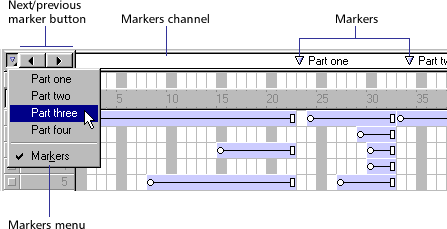
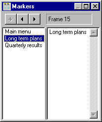

Using Director > Director basics > Using markers
Using Director > Director basics > Using markers |
Using markers
Markers identify fixed locations at a particular frame in a movie; you use markers when you're defining navigation. Using Lingo or draggable behaviors, you can instantly move the playback head to any marker frame. This is useful when jumping to new scenes from a menu or looping while cast members download from the Web. You can also use markers while authoring to advance quickly to the next scene.
Once you've marked a frame in the Score, you can use the marker name in your behaviors or scripts to refer to exact frames. Marker names remain constant no matter how you edit the Score. They are more reliable to use as navigation references than are frame numbers, which can change if you insert or delete frames in the Score.
You can use the Markers window to write comments associated with markers you set in the Score and to move the playback head to a particular marker.

To create a marker:
1 |
Click the markers channel. |
A text insertion point appears to the right of the marker. |
|
2 |
Type a short name for the marker. |
To delete a marker:
Drag the marker up or down and out of the markers channel.
To jump to markers while authoring, do any of the following:
Click the Next Marker and Previous Marker buttons on the left side of the markers channel. |
|
Press the 4 and 6 keys on the numeric keypad to cycle backward and forward through markers. |
|
Choose the name of a marker from the Markers menu. |
To move the playback head to a marker and enter marker comments:
1 |
Select a marker in the Score window and choose Window > Markers. The Markers window opens and displays comments associated with that frame.
 |
2 |
Click a marker name in the list. Comments associated with markers appear in the right column. |
Note: Use Control+Left Arrow or Control+Right Arrow (Windows) or Command+Left Arrow or Command+Right Arrow (Macintosh) to move to the previous or next marker. |
|
3 |
To enter or edit comments, begin typing at the insertion point that appears in the right column. |
By default, the marker name appears as the first line of text in the right column. |
|
4 |
If you don't want to edit the marker name, press Enter (Windows) or Return (Macintosh) to start a new line. |